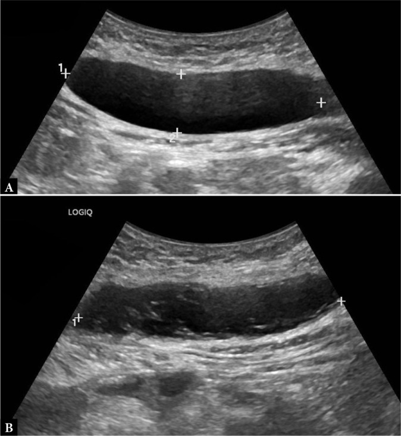
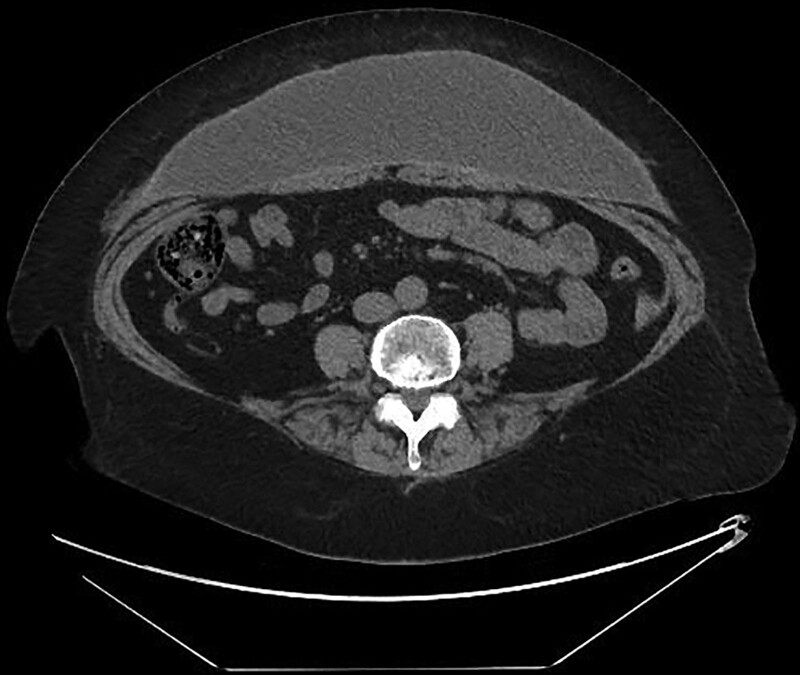

1968 — Seroma vùng cho vạt sau DIEP/TRAM: vì sao dịch tích, khi nào chỉ theo dõi, khi nào chọc hút và khi nào phải mổ / Donor-site seroma after DIEP/TRAM flap
Tags: pattern:seroma pattern:dich-tu-do pattern:khong-dich vung:thanh-bung vung:vu anatomy:bao-co-thang protocol:sieu-am-dau-dong protocol:CT-khong-can-quang incidentaloma:seroma-sau-mo score:the-tich-dich
Mức chắc chắn (certainty): tổng hợp y văn (literature synthesis) — ghép phân tích gộp 71 nghiên cứu / 12.739 bệnh nhân / 16.915 vạt DIEP về seroma vùng cho (Plast Reconstr Surg Glob Open 2026, PMC13561297), đoàn hệ 156 bệnh nhân seroma sau mổ 12 năm có khuyến cáo xử trí (J Clin Med 2022, PMC9457167), khảo sát 97 phẫu thuật viên vú Anh về dẫn lưu và rút dẫn lưu (Breast Cancer Res Treat 2024, PMC10787912), ca lâm sàng siêu âm đối chiếu seroma – tụ máu (J Ultrasonography 2025, PMC12831968) và ca seroma bao xơ 8 năm sau tạo hình bụng (Plast Reconstr Surg Glob Open 2021, PMC8376326). Nhóm không có bệnh nhân của mình.
Câu hỏi thực hành: nữ 48 tuổi, 12 ngày sau tái tạo vú bằng vạt DIEP trái, về nhà với hai dẫn lưu đã rút ngày 7; nay bụng dưới căng, phồng nhẹ, không sốt, không đau nhiều, vết mổ khô. Siêu âm: khoảng dịch không hồi âm dưới da, bờ đều, không mạch, sâu 2,1 cm, kích thước 6,4 × 4,8 × 3,0 cm. Câu hỏi: đây là seroma hay tụ máu/nhiễm — có cần chọc không, chọc bao nhiêu lần thì dừng, và khi nào phải mổ? Bài chốt bốn quyết định: (1) seroma vùng cho DIEP gặp 6% (KTC 95% 4–7%) và phần lớn tự giới hạn; (2) siêu âm là bước đầu: dịch không hồi âm, không mạch, không vách = seroma; có hồi âm trong lòng/không đồng nhất = nghĩ tụ máu; vách dày, khí, tăng sinh mạch viền = nghĩ nhiễm; (3) chọc hút khi căng đau hoặc ảnh hưởng vận động/vết mổ, vô khuẩn, dưới siêu âm; không chọc mù khi đang rối loạn đông máu; (4) kéo dài > 40 ngày hoặc > 5–6 lần hút mà thể tích không giảm → chuyển mổ (nguy cơ phải mổ 81,5% vs 31,8%), đặt lại dẫn lưu chỉ là biện pháp tạm và 85% vẫn phải mổ. Nối 1871 – Phồng/yếu thành bụng sau DIEP/TRAM, 1689 – Nhiễm trùng và hoại tử vạt tự thân, 1687 – Hoại tử mỡ sau tái tạo vú.
1. Tổng quan bệnh học – cơ chế hình ảnh: vì sao "khoang chết" lại đầy dịch
1.1 Sinh lý bệnh: ba nguồn dịch, một khoang chết
- Khoang chết (dead space) là điều kiện tiên quyết. Lấy vạt DIEP bóc toàn bộ da – mỡ dưới da – hàng xuyên (perforator) khỏi mạc trước cơ thẳng, rồi đóng lại bằng cách kéo hai bờ da–mỡ vào nhau. Hai mặt mô vừa bóc không dính lại ngay mà trượt lên nhau (shear) theo từng cử động thở/đi lại → khoang thật sự vẫn tồn tại trong nhiều ngày.
- Ba nguồn dịch: (1) mạch bạch huyết bị cắt trong vạt và trong mô đệm quanh hàng xuyên — dịch giàu protein; (2) dịch viêm sau tổn thương mô (tăng tính thấm mao mạch 24–72 giờ đầu); (3) máu rỉ từ diện bóc (bị đốt/đốt điện, nên ít nhưng vẫn có).
- Vì sao dẫn lưu không "chữa" được: ống dẫn lưu chỉ hút phần dịch đã vào khoang; nó không làm mạch bạch huyết đóng lại và không làm hai mặt mô dính. Vì vậy seroma vẫn xuất hiện sau khi rút dẫn lưu — đúng như tổng quan 2026 nhấn mạnh: dẫn lưu kín là chuẩn mực nhưng không loại bỏ được seroma (PMC13561297).
- Vì sao seroma mạn lại thành "nang": dịch đọng lâu → fibrin lắng, tế bào viêm, tổ chức hạt → hình thành vỏ xơ (pseudocapsule) sau vài tuần. Khi đã có vỏ, hút bao nhiêu cũng tái lập vì vỏ tiết dịch và không co lại — đây là cơ sở của "seroma bao xơ" phải cắt bỏ vỏ (PMC8376326).
1.2 Vật lý hình ảnh: vì sao seroma "trong như nước" còn tụ máu thì không
- Siêu âm: seroma là dịch đồng nhất, ít tế bào, ít protein → không hồi âm (anechoic), tăng hồi âm phía sau (posterior acoustic enhancement), không có tín hiệu Doppler. Tụ máu có hồng cầu, fibrin, cục máu → hồi âm trong lòng, có vách/lắng, và không mạch (khác u). Ca minh hoạ ở mục 3 là ví dụ đối chiếu cùng một bệnh nhân, cùng một lần khám: ổ phải trong = seroma, ổ trái không đồng nhất = tụ máu (PMC12831968).
- CT: dịch seroma 0–20 HU (gần nước), đồng nhất, thành mỏng đều, không khí, không ngấm thuốc. Tụ máu cấp ~45 HU (máu lỏng) đến ~85 HU (cục máu) theo số liệu đã tổng hợp ở bài 1936; tụ máu bán cấp giảm đậm độ dần từ ngoại vi vào trung tâm. Mỡ dưới da −50 đến −120 HU — nên một "khối dịch" −90 HU là mỡ, không phải seroma.
- MRI (ít dùng cho seroma): seroma T1 thấp – T2 rất cao (nước tự do); tụ máu bán cấp T1 cao do methemoglobin (Fe³⁺) — đây là lý do T1 cao trong "khối dịch sau mổ" phải nghĩ máu, không phải seroma.
- Vì sao phân biệt được bằng hình ảnh dù cùng là "dịch": tín hiệu/đậm độ phản ánh thành phần (nước tự do vs hồng cầu vs mủ vs mỡ), còn vị trí – bờ – vỏ phản ánh thời gian. Ba câu hỏi: đậm độ/tín hiệu gì → ở khoang nào → vỏ dày bao nhiêu.
1.3 Dịch tễ và ngưỡng định lượng (số phải nhớ)
- Tần suất gộp: 6% (KTC 95% 4–7%) — 71 nghiên cứu, 12.739 bệnh nhân, 16.915 vạt DIEP, 736 seroma; độ không đồng nhất lớn (I² = 85,3%; τ² = 0,05; p < 0,001); BMI trung bình 27,2 kg/m², tuổi 50,4 (PMC13561297). Y văn đơn lẻ báo < 1% đến > 20% — chính vì định nghĩa seroma khác nhau, nên con số 6% là mốc để tư vấn, không phải để so từng bài.
- Yếu tố nguy cơ — nghịch lý cần biết: trong phân tích gộp, hút thuốc KHÔNG liên quan (p = 0,57) và đái tháo đường chỉ xu hướng (p = 0,07) → tác giả kết luận seroma do yếu tố kỹ thuật – chu phẫu nhiều hơn bệnh nền (PMC13561297). Vì vậy "bệnh nhân không hút thuốc" không loại trừ seroma.
- Dự phòng có bằng chứng: khâu căng tiến triển (progressive tension sutures, PTS) giảm seroma so với chỉ dùng dẫn lưu (RR 0,34; KTC 95% 0,15–0,76); giữ cân Scarpa trong tạo hình bụng giảm tới 80% nguy cơ seroma; nhưng ở vùng cho DIEP, PTS chỉ kiểm soát khoang nông, còn dịch đến từ mặt phẳng sâu quanh hàng xuyên — nên hiệu quả không đồng nhất; liệu pháp áp lực âm trên vết mổ (NPWT) không khác biệt (302 bệnh nhân) và lấy vạt bằng robot cũng không khác biệt (5 nghiên cứu, 691 bệnh nhân) (PMC13561297).
- Thực hành dẫn lưu (khảo sát Anh 2024): 85% (82/97) phẫu thuật viên vú dùng dẫn lưu (39% thường quy, 45% chọn lọc); trong số dùng, 62% (59/79) rút theo thể tích, phổ biến nhất < 50 mL/24 giờ (PMC10787912). Đây là mốc tham chiếu, không phải guideline quốc tế.
- Hệ quả lâm sàng: seroma kéo dài làm chậm lành vết mổ, tăng nguy cơ nhiễm, làm trễ xạ/hóa trị bổ trợ và là lý do nhập viện/thủ thuật lại — nên câu hỏi "chọc hay không" là câu hỏi kinh tế – thời gian điều trị, không chỉ "khó chịu".
2. Mẫu hình + chẩn đoán phân biệt theo vị trí và thời điểm (Gamut)
- Mẫu hình chung: khối dịch dưới da, bờ đều, không đau hoặc căng nhẹ, xuất hiện sau khi rút dẫn lưu ở đúng vùng cho vạt. Không sốt, không đỏ, vết mổ khô.
- Gamut theo thời gian sau mổ:
- 0–14 ngày: seroma (hay nhất), tụ máu (đặc biệt nếu kháng đông/tiền sử chảy máu), nhiễm sớm/áp-xe (sốt, đỏ, đau tăng), hoại tử mỡ sớm (vùng cứng, không dịch).
- 14 ngày–3 tháng: seroma dai dẳng, seroma nhiễm (vách dày, dịch đục), hoại tử mỡ (1687), rò bạch huyết (dịch ra nhiều, tái lập nhanh sau hút).
- > 3 tháng: seroma bao xơ (encapsulated), bulge/thoát vị (1871), hoại tử mỡ vôi hoá, u tái phát/di căn thành bụng (rất hiếm), u mô mềm mới.
- Gamut theo độ sâu (quyết định thái độ xử trí):
- Dưới da nông (trên cân Scarpa): seroma "túi nước" điển hình, hút dễ, ít nguy cơ.
- Dưới cân Scarpa – trên mạc trước cơ thẳng: đúng khoang chết của vạt DIEP; hút khó hơn, dễ tái lập.
- Trong cơ thẳng/bao cơ thẳng: tụ máu bao cơ thẳng (1936), không phải seroma vùng cho.
- Dưới mạc (trong ổ bụng): không bao giờ là seroma vùng cho — phải loại thoát vị, dịch ổ bụng, biến chứng nội tạng.
3. Bảng so sánh phân biệt (ma trận đối chiếu)
| Thực thể (entity) | Hình ảnh điển hình (US/CT/MRI) | Chốt vào (rule-in) | Chốt loại (rule-out) | Gợi ý xác nhận |
|---|---|---|---|---|
| Seroma đơn thuần | US: không hồi âm, đồng nhất, tăng hồi âm sau, không mạch; CT: 0–20 HU, thành mỏng, không khí, không ngấm | Dịch đồng nhất + không mạch + đúng khoang chết dưới da ở vùng cho vạt | Có hồi âm trong lòng/vách → nghĩ máu; khí/thành dày/ngấm viền → nghĩ nhiễm | US ± CT không cản quang; đo 3 chiều, tính thể tích; chọc hút vô khuẩn nếu căng đau |
| Tụ máu (hematoma) | US: hồi âm trong lòng, có vách/lắng, không mạch; CT cấp ~45–85 HU, bán cấp giảm dần từ ngoại vi; MRI T1 cao (methemoglobin) | Đậm độ/tín hiệu máu + tiền sử kháng đông/chảy máu + đau căng nhanh | Dịch 0–20 HU, T1 thấp → seroma; có mạch trong tổn thương → u/giả phình | CT không cản quang; nếu nghi chảy máu hoạt động → CT có cản quang thì muộn |
| Seroma nhiễm/áp-xe | US: vách dày không đều, hồi âm trong lòng, khí (bóng mờ bẩn), tăng sinh mạch viền; CT: thành ngấm thuốc, khí trong mô mềm, thâm nhiễm mỡ quanh | Sốt/đỏ/đau tăng + khí + thành ngấm thuốc | Dịch trong, thành mỏng, không khí → không nhiễm | Chọc hút cấy dịch trước kháng sinh; khí trong mô mềm = dẫn lưu/mổ, không chờ |
| Rò bạch huyết (lymphatic fistula) | Không có dấu hiệu riêng trên US/CT: dịch tái lập rất nhanh, thể tích lớn; có thể thấy đường rò nếu bơm chất chỉ thị | Dịch > 300 mL/ngày hoặc tái lập trong vài giờ sau hút, không sốt, vết mổ khô | Đáp ứng với 1–2 lần hút, thể tích giảm dần → seroma thường | Đo lưu lượng/24 giờ; lymphoscintigraphy khi cần (nhóm seroma thật đã loại các ca này) |
| Hoại tử mỡ | US: khối hồi âm hỗn hợp, không mạch, có thể viền giảm âm; CT: mô mềm/mỡ không ngấm, có vôi hoá muộn | Khối đặc/xơ cứng, không phải túi dịch; tiến triển theo tuần–tháng | Dịch di động, thay đổi theo tư thế → seroma | So 1687; theo dõi 3–6 tháng |
| Bulge/thoát vị vùng cho | CT có Valsalva: mạc liên tục + cơ mỏng = bulge; lỗ khuyết + túi = thoát vị | Thay đổi theo gắng sức, không có túi dịch | Dịch khu trú, không đổi theo Valsalva → seroma | So 1871; CT 2 thì |
| Seroma bao xơ (mạn) | CT: khối dịch 0–20 HU, vỏ xơ dày đều, bám mạc, không khí; có thể vôi hoá vỏ | Tồn tại > 3 tháng, thể tích không giảm dù hút nhiều lần, vỏ rõ | Vỏ mỏng + giảm dần → seroma cấp; nốt đặc trong vỏ → loại u | MRI/CT có cản quang; cắt vỏ + đóng kín là điều trị |

Hai ổ dịch ở thành bụng cùng một bệnh nhân (nữ 26 tuổi, 2 tuần sau tạo hình bụng): (A) ổ không hồi âm, đồng nhất = seroma; (B) ổ không đồng nhất, có hồi âm trong lòng = tụ máu; cả hai không có tín hiệu Doppler. Nguồn: Journal of Ultrasonography 2025, Fig. 7, PMC12831968, CC BY-NC-ND 4.0 — ảnh nguyên bản, không crop/ghép.
CT ngang không cản quang: khối dịch lớn, đồng nhất, bờ rõ, nằm TRƯỚC cơ thẳng bụng (giữa mỡ dưới da và mạc trước) — seroma bao xơ tồn tại 8 năm sau tạo hình bụng, đã cắt bỏ vỏ. Điểm cần nhớ: vị trí trước mạc, không trong ổ bụng, không trong cơ. Nguồn: Plast Reconstr Surg Glob Open 2021, Fig. 1, PMC8376326, CC BY-NC-ND 4.0 — ảnh nguyên bản.Ba câu hỏi quyết định trên siêu âm
- 1. Trong hay đục? Không hồi âm + tăng hồi âm sau = seroma; hồi âm trong lòng, vách, lắng = máu hoặc mủ. Đây là câu hỏi phân biệt sống còn vì tụ máu lớn/đang chảy phải xử trí khác.
- 2. Có mạch không? Không mạch loại u/giả phình; mạch trong vỏ hoặc trong tổn thương buộc phải tìm nguyên nhân khác (u, giả phình, dị dạng).
- 3. Vỏ dày bao nhiêu, có khí không? Vỏ < 2 mm, đều = seroma đơn thuần; vỏ dày không đều + khí = nhiễm, phải dẫn lưu/mổ chứ không hút đơn thuần.
4. Protocol chụp + phân tầng xử trí
- Siêu âm là bước đầu, luôn làm: đầu dò linear 12–18 MHz (người béo dùng 9–12 MHz), quét dọc và ngang, so hai bên, đo 3 chiều và tính thể tích theo V = 0,52 × D1 × D2 × D3. Ghi: vị trí so với cân Scarpa/mạc trước, độ sâu từ mặt da, độ dày vỏ, hồi âm trong lòng, khí, Doppler, có thông với ổ bụng không.
- CT bụng–chậu không cản quang khi: khối lớn/béo khó siêu âm, nghi thoát vị/bulge (thêm thì Valsalva, xem 1871), nghi tụ máu sâu, sốt chưa rõ ổ. Có cản quang khi nghi áp-xe (thành ngấm thuốc) hoặc chảy máu hoạt động (thoát cản quang).
- Chọc hút dưới siêu âm — kỹ thuật: vô khuẩn, kim 18–21 G, đường vào xa vết mổ và xa mạch, không xuyên qua túi thoát vị/ổ bụng; hút hết dịch rồi băng ép; gửi cấy nếu sốt/đỏ/dịch đục; không bơm chất gây xơ ngay lần đầu ở vùng cho vạt (nguy cơ hoại tử da).
- Phân tầng xử trí (số liệu từ 156 bệnh nhân, PMC9457167):
- Không đau, thể tích nhỏ, không sốt: theo dõi + băng ép; không chọc chỉ vì "có dịch".
- Căng đau/ảnh hưởng vết mổ: hút dưới siêu âm; hẹn lại 1–2 tuần.
- Hút > 40 ngày: 81,5% phải mổ so với 31,8% ở nhóm hút ≤ 40 ngày (p = 0,001; nguy cơ tương đối 9,43) → nên tư vấn mổ sớm thay vì hút mãi.
- Không giảm sau 5–6 lần hút: đặt vấn đề mổ cắt vỏ (tiêu chuẩn nhóm tác giả dùng).
- Đặt lại dẫn lưu khi dịch ~> 300 mL: 10/10 bệnh nhân trong loạt này cuối cùng vẫn phải mổ; nhìn chung đặt lại dẫn lưu tăng 3,3 lần nguy cơ mổ (85% phải mổ) → chỉ là biện pháp tạm.
- Nhiễm/skin necrosis: mổ dẫn lưu/cắt lọc; trong loạt có 25 ca nhiễm và 17 ca hoại tử da tại thời điểm nhập viện.
- Sơ đồ quyết định:
flowchart TD
A[Khoi dich vung cho vat sau DIEP/TRAM] --> B[Sieu am: trong, khong mach, vo mong?]
B -->|Khong| C[CT khong can quang + tim DDx: mau, ap-xe, thoat vi, u]
B -->|Co| D{Sot, do, dau tang, khi?}
D -->|Co| E[Dan luu/mo + cay dich]
D -->|Khong| F{Cang dau hoac anh huong vet mo?}
F -->|Khong| G[Theo doi + bang ep, hen 1-2 tuan]
F -->|Co| H[Hut duoi sieu am, vo khuan]
H --> I{Con dich sau 5-6 lan hut hoac > 40 ngay?}
I -->|Khong| G
I -->|Co| J[Mo cat vo / dong kin]
H --> K{Dich > 300 mL va tai lap nhanh?}
K -->|Co| L[Nghi ro bach huyet: do luu luong, lymphoscintigraphy]
5. Biến thể bình thường và cạm bẫy
- "Túi dịch" sau mổ có thể là mỡ: mỡ dưới da −50 đến −120 HU trên CT, hồi âm đều, hơi sáng trên siêu âm; đừng gọi là seroma rồi chọc. Đo HU là cách phân biệt rẻ nhất.
- Dẫn lưu "khô" không loại trừ seroma: ống có thể bị fibrin bít hoặc rút ra khỏi khoang; bệnh nhân vẫn căng, siêu âm vẫn có dịch. Luôn siêu âm khi lâm sàng không khớp với lượng dịch trong ống.
- Hút mù bằng kim to ở vùng bẹn/bụng dưới: nguy cơ chọc vào mạch (động mạch thượng vị dưới/nhánh bẹn) hoặc vào túi thoát vị. Luôn dưới siêu âm, và không chọc khi INR > 1,5 / tiểu cầu < 50 × 10⁹/L mà chưa xử lý.
- Seroma "tái phát" sau 3 tháng = đổi chẩn đoán: nghĩ seroma bao xơ, hoại tử mỡ, bulge, hoặc tổn thương mới. Đừng tiếp tục hút mà không chụp lại.
- Bẫy thỏa mãn tìm kiếm (satisfaction of search): thấy seroma rồi dừng, bỏ sót thoát vị lỗ trocar hoặc khối mô mềm đi kèm — luôn quét toàn thành bụng.
- Seroma nhiễm có thể không sốt: ở người suy giảm miễn dịch/sau xạ, chỉ đỏ và dịch đục; cấy dịch là bắt buộc khi định hút lần 2.
- Không dùng kháng sinh dự phòng "cho chắc" sau mỗi lần hút: làm mờ cấy và chọn sai kháng sinh khi nhiễm thật.
6. Tự lượng giá — Blind Quiz
Ca 1 — Bụng dưới căng sau tạo hình bụng
- Gợi ý lâm sàng: nữ 26 tuổi, 2 tuần sau cắt dạ dày ống + tạo hình bụng, đau nhẹ, không sốt, da hơi đổi màu nhưng nguyên vẹn.
- Câu hỏi: Hai ổ dịch khác nhau ở điểm nào? Chẩn đoán từng ổ? Có cần chọc cả hai không?
Bấm để hiện đáp án (findings + chẩn đoán)
- Dấu hiệu: A — ổ không hồi âm, đồng nhất, bờ đều, không mạch = seroma. B — ổ không đồng nhất, hồi âm trong lòng, không mạch = tụ máu.
- Chẩn đoán: seroma (phải) + tụ máu (trái) cùng một bệnh nhân. Seroma hút nếu căng đau; tụ máu không hút mù — theo dõi nếu nhỏ, CT có cản quang nếu đau tăng/Hb giảm để loại chảy máu hoạt động.
- Vì sao: cùng là "dịch", nhưng thành phần quyết định hồi âm — nước tự do trong, hồng cầu/fibrin tạo hồi âm. Cả hai không có mạch, nên Doppler âm không phân biệt được với u.
- Nguồn ảnh: Journal of Ultrasonography 2025, Fig. 7, PMC12831968, CC BY-NC-ND 4.0.
Ca 2 — Khối bụng dưới tồn tại 8 năm
- Gợi ý lâm sàng: nữ 64 tuổi, 8 năm sau tạo hình bụng, bụng nhô ra nhưng không đau, không sốt, không có khối sa khi gắng sức.
- Câu hỏi: Khối dịch nằm ở khoang nào? Vì sao không tự tiêu? Hai chẩn đoán phân biệt cần loại trừ?
Bấm để hiện đáp án (findings + chẩn đoán)
- Dấu hiệu: khối dịch đồng nhất, bờ rõ, thành mỏng–đều, nằm trước cơ thẳng bụng (giữa mỡ dưới da và mạc trước), không thông ổ bụng, không khí.
- Chẩn đoán: seroma bao xơ mạn — vỏ xơ tiết dịch và không co nên không thể tự tiêu; điều trị là cắt bỏ vỏ + đóng kín.
- Phân biệt: thoát vị/bulge (có lỗ khuyết, thay đổi theo Valsalva) và u mô mềm/hay hoại tử mỡ có vỏ (nốt đặc, ngấm thuốc) — CT có cản quang hoặc MRI nếu không chắc.
- Nguồn ảnh: Plast Reconstr Surg Glob Open 2021, Fig. 1, PMC8376326, CC BY-NC-ND 4.0.
Ca 3 — Dịch tái lập trong vài giờ (không có ảnh)
- Gợi ý lâm sàng: nữ 55 tuổi, 10 ngày sau DIEP, hút ra 350 mL dịch vàng trong; 6 giờ sau đã căng lại, vết mổ khô, không sốt, không đỏ.
- Câu hỏi: Đây là seroma thường hay biến chứng khác? Cần đo gì và làm gì tiếp?
Bấm để hiện đáp án (findings + chẩn đoán)
- Dấu hiệu: tái lập rất nhanh với thể tích lớn (> 300 mL/ngày), không nhiễm trùng, không tụ máu.
- Chẩn đoán: nghĩ rò bạch huyết (lymphatic fistula) hơn là seroma đơn thuần — seroma thường giảm dần sau mỗi lần hút.
- Việc làm: đo lưu lượng 24 giờ, cấy dịch (loại nhiễm), không đặt lại dẫn lưu hút mạnh (làm tăng lưu lượng); hội chẩn phẫu thuật; lymphoscintigraphy khi cần xác định đường rò. Trong loạt 156 bệnh nhân, nhóm đặt lại dẫn lưu vì dịch ~> 300 mL đều phải mổ.
- Nguồn: J Clin Med 2022, PMC9457167 (nhóm seroma thật đã loại trừ ca rò bạch huyết bằng lymphoscintigraphy).
Bài liên quan chéo
- 1871 – Phồng – yếu thành bụng sau lấy vạt DIEP/TRAM: bulge vs thoát vị, CT Valsalva
- 1689 – Nhiễm trùng & hoại tử vạt tự thân sau tái tạo vú
- 1687 – Hoại tử mỡ sau tái tạo vú, vạt & ghép mỡ
- 1936 – Tụ máu bao cơ thẳng bụng: "bụng cấp" giả, đậm độ máu 45–85 HU
- 516 – Hình ảnh vú sau điều trị: tái tạo, hoại tử mỡ, sẹo vs tái phát
Ảnh
images/1968_seroma-vat-bung_US-seroma-vs-hematoma_PMC12831968.jpg— US đối chiếu seroma/tụ máu, CC BY-NC-ND 4.0, nguyên bản.images/1968_seroma-vat-bung_CT-seroma-man-PMC8376326.jpg— CT seroma bao xơ, CC BY-NC-ND 4.0, nguyên bản.- Không có ảnh composite: cả hai ảnh là CC BY-NC-ND (cấm tạo tác phẩm phái sinh).
Không dùng để chẩn đoán độc lập khi chưa có người hướng dẫn.